Adkham Izbassar
I am a Graduate Research Assistant in Petroleum Engineering at Texas Tech University. My research focuses on geologic hydrogen, electromagnetic interactions with reservoir rocks, multiphase flow, and experimental subsurface energy systems.
I am particularly interested in understanding natural and stimulated hydrogen generation in geological systems and in developing technologies that can translate subsurface energy research into practical industrial applications.
Email: adkham786@gmail.com
Phone: +1 (251) 388-4132

Research Interests
Geologic hydrogen · Electromagnetic reservoir stimulation · In-situ hydrogen generation · Enhanced oil recovery · Multiphase flow · Subsurface energy systems
Latest Updates
Research accepted for presentation at the Society of Petroleum Engineers Annual Technical Conference and Exhibition (SPE ATCE 2026): “Enhancing Electromagnetic Penetration Depth in Reservoir Rocks: Characterizing Acoustic, Thermal, and Frequency Effects.”
Presented preliminary studies on geological hydrogen generation through radiolysis and the chromite-mine degassing potential of Kazakhstan at the inaugural Gordon Research Conference on Geologic Hydrogen.

Delivered a presentation on production handling and multiphase flow, “Design of a Transparent Pipeline System for Controlled Laboratory Flow Experiments,” at the Southwestern Petroleum Short Course.

Research
Geologic Hydrogen
Investigation of natural hydrogen systems in Kazakhstan and West Texas, with emphasis on generation mechanisms, migration pathways, geological controls, and field detection. The work includes evaluation of hydrogen associated with ultramafic rocks, water-rock reactions, radiolysis, and subsurface structures.
- Field measurements of hydrogen in soil gas and producing or legacy well environments in West Texas.
- Geologic screening of prospective hydrogen systems in Kazakhstan using mineralogy, structure, and known hydrogen-generation mechanisms.
- Integration of field observations with laboratory and geologic interpretation to identify follow-up sampling and characterization targets.
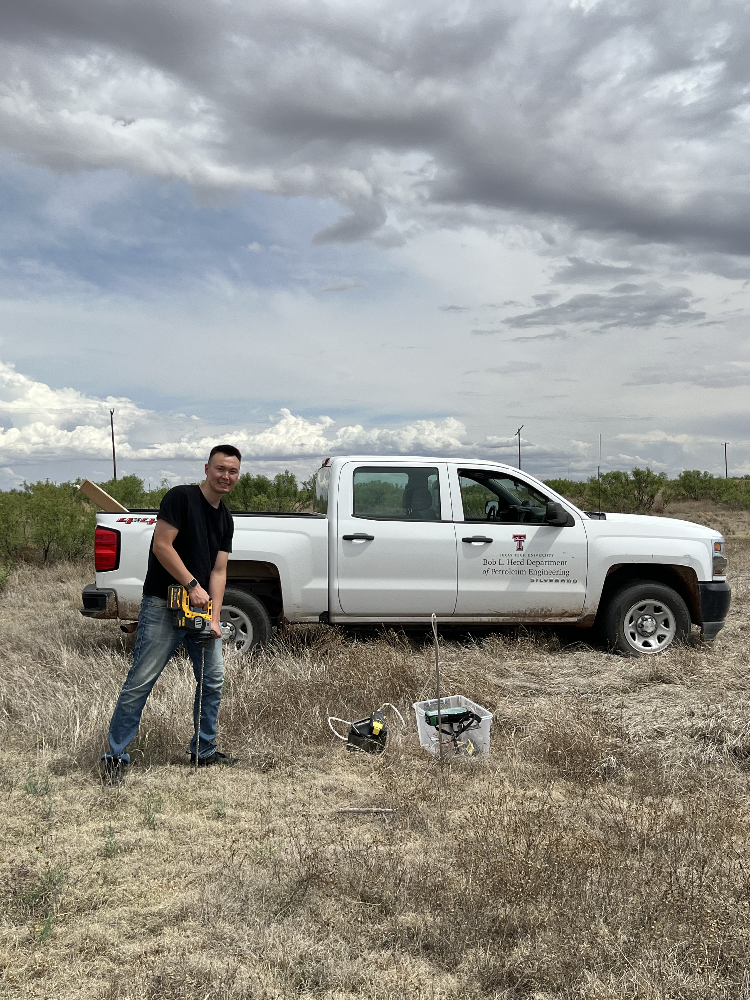
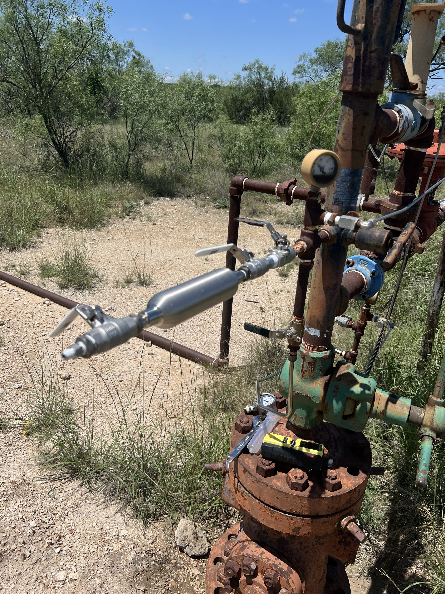
Electromagnetic Reservoir Stimulation
Experimental investigation of dielectric properties and electromagnetic penetration depth in reservoir rocks under changing pressure, temperature, fluid saturation, and acoustic conditions. The broader objective is to improve the understanding and design of electromagnetic stimulation for subsurface energy applications.
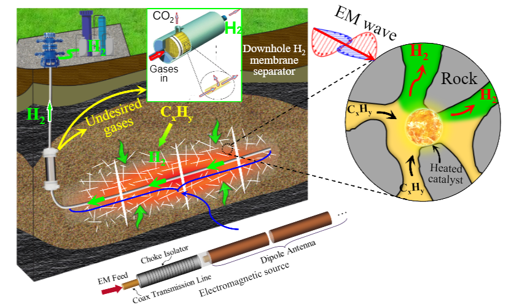
- Investigated electromagnetic heating of oil- and hydrocarbon-saturated reservoir rocks as a pathway for in-situ hydrogen generation.
- Evaluated how rock type, fluid saturation, frequency, temperature, and pressure influence dielectric response and heat delivery.
- Determined electromagnetic attenuation and penetration depth to estimate how far energy can propagate through shale, limestone, and sandstone.
- Studied coupled thermal, pressure, and acoustic conditions to identify methods for extending the effective heating distance in reservoirs.
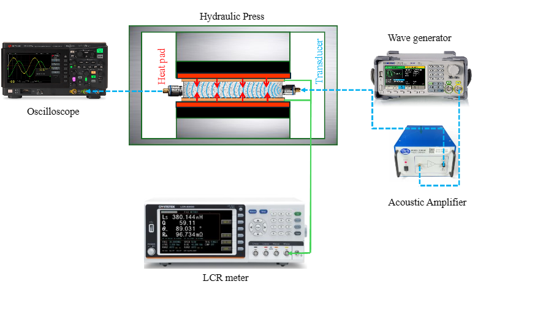
Multiphase Flow and Pipeline Systems
Experimental development and testing of transparent thermoplastic pipeline systems for multiphase-flow visualization, pressure integrity, and cyclic loading. The work supports field-scale observation of flow regimes and surface slugging behavior.
- Static and cyclic pressure testing of transparent thermoplastic pipe materials and connection systems.
- Evaluation of failure behavior, sealing performance, and practical operating limits.
- Design and installation of transparent pipeline sections for field-scale multiphase-flow visualization.
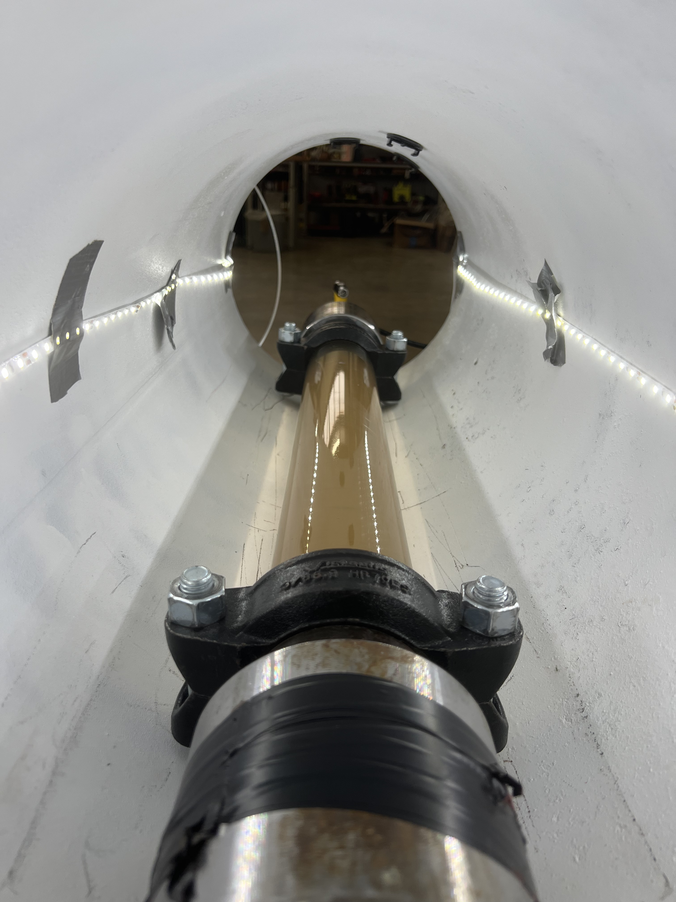
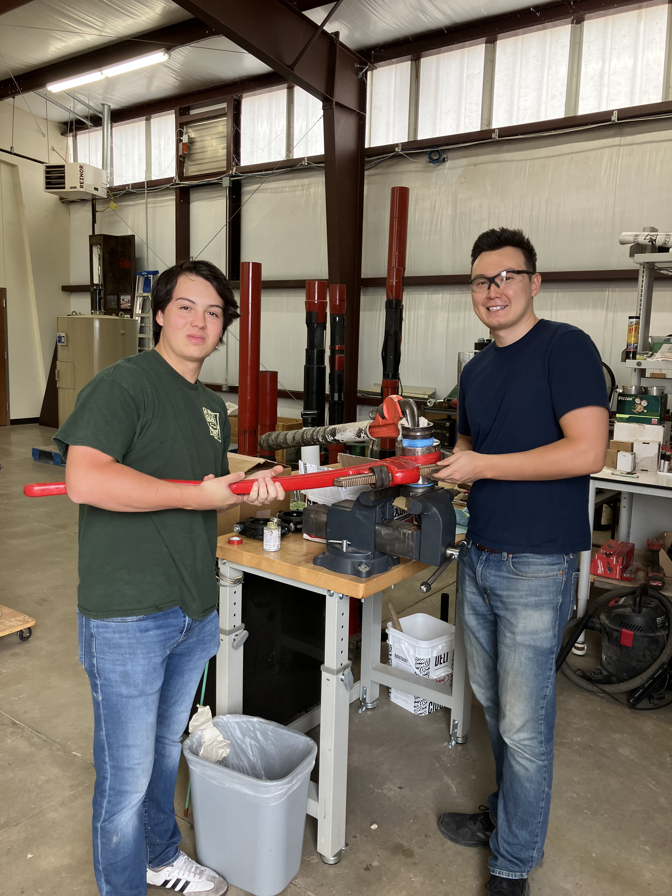
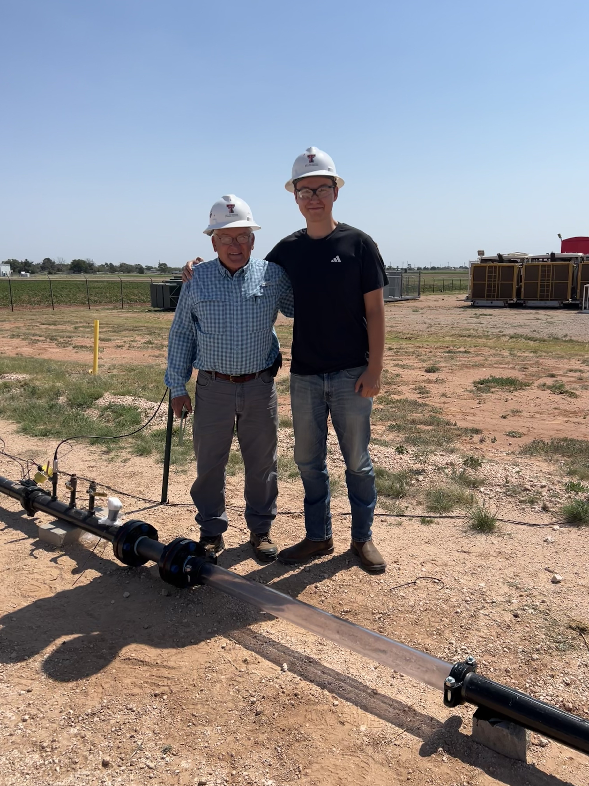
Undergraduate Work
Renewable Energy and Maximum Power Point Tracking
Worked with graduate students in Electrical and Computer Engineering on a renewable-energy system combining wind and solar generation, battery storage, and maximum power point tracking. The work included system assembly, circuit-level testing, and modeling of power-electronics behavior.
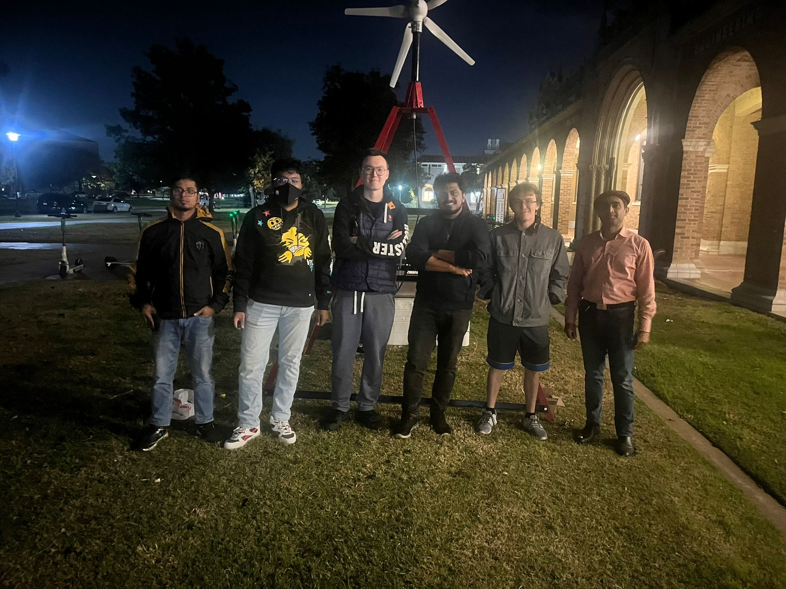
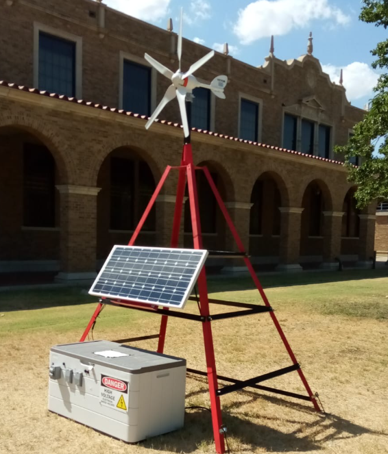
Mechanical Engineering Capstone — Gas Turbine
Designed and built a small gas-turbine system as a mechanical engineering capstone project, including the combustor, fuel and lubrication subsystems, mechanical integration, and system-level testing. The project received the Best Innovative Design award at the Mechanical Engineering Design Expo.
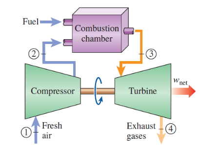
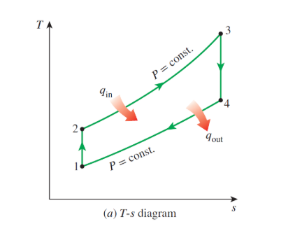

Publications
- Izbassar, A., Kyei, M., Dean, J., Varela, V. G., Li, C., Liu, J., and Yuan, Q. “Enhancing Electromagnetic Penetration Depth in Reservoir Rocks: Characterizing Acoustic, Thermal, and Frequency Effects.” Fuel, manuscript submitted and under review, 2026.
- Izbassar, A., Meneses, A., and Leggett, S. “Experimental Evaluation of Burst Pressure and Cyclic Fatigue in Transparent Thermoplastic Pipelines for Multiphase Flow Applications.” Polymer Testing, manuscript in preparation, 2026.
Selected Presentations
- Izbassar, A., Kyei, M., Dean, J., Varela, V. G., Li, C., Liu, J., and Yuan, Q. “Enhancing Electromagnetic Penetration Depth in Reservoir Rocks: Characterizing Acoustic, Thermal, and Frequency Effects.” Society of Petroleum Engineers Annual Technical Conference and Exhibition (SPE ATCE), Houston, Texas, 2026. Accepted for presentation.
- Izbassar, A. “Design of a Transparent Pipeline System for Controlled Laboratory Flow Experiments.” Proceedings of the Southwestern Petroleum Short Course, Production Handling, Paper 2026065, 2026.
- Izbassar, A., Maiga, O., and Yuan, Q. “Unlocking the Natural Hydrogen Potential of Kazakhstan: Evidence from Serpentinization, Radiolysis, and Surface Indicators.” Gordon Research Conference on Geologic Hydrogen, Newry, Maine, 2026. Poster presentation.
Education
M.S. Petroleum Engineering
B.S. Mechanical Engineering
Contact
adkham786@gmail.com
+1 (251) 388-4132
LinkedIn ·
HOPE Research Group